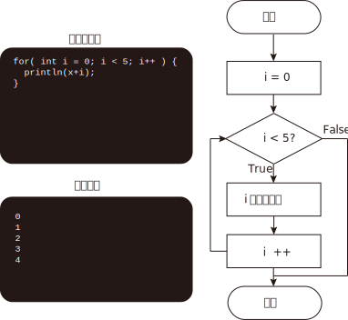
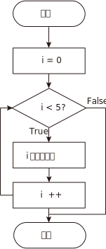

ループ
forを用いて、ループ、つまり、繰り返しプログラムを実行することができます。 以下のような書き方をします。
for( 変数の初期値; 繰返しを続ける条件; 変数の増分 ) {
繰返したい処理;
}
下図にプログラムとフローチャートを示しています。下図はiが5より小さい限りi中身を繰り返し出力するコードです。
実際にどのようにfor文が動いているのかは「視覚的に見てみよう」を確認してください。

視覚的に見てみよう
実行ボタンを押すと、コードの動作と図解アニメーションを確認できます。
プログラム
for (int i = 0; i < 5; i++) {
println(i);
}
結果の出力
アニメーション
